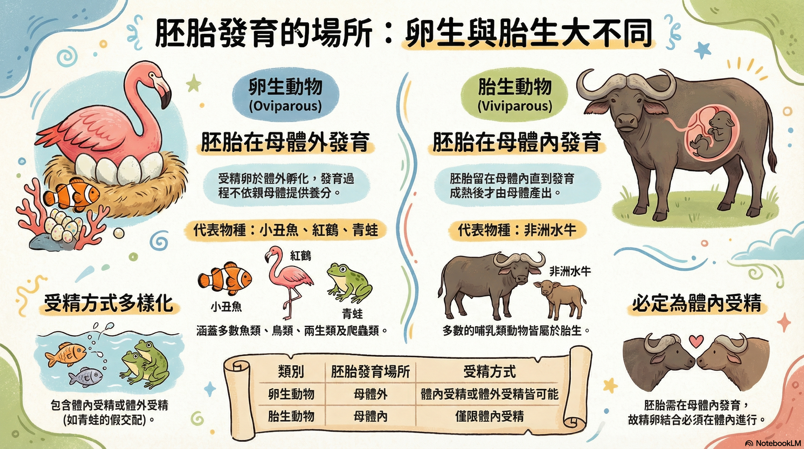

教學重點
關鍵字已用不同顏色標示
動物依照胚胎發育的場所不同，可分為卵生和胎生。
卵生動物的胚胎在母體外發育， 兩生類、鳥類、多數的魚類與爬蟲類屬於卵生動物。
胎生動物的胚胎留在母體內發育， 直到胎兒發育成熟後，由母體產出， 多數的哺乳類屬於胎生動物。

互動練習題（共 4 題）
題型不重複
第 1 題｜判斷題：卵生動物的胚胎是在母體外發育。
請選擇「正確」或「錯誤」。
第 2 題｜多選題：哪些類群屬於「卵生」？
請勾選全部正確選項（可複選）。
第 3 題｜排序題：依照「胎生」描述出現的順序排列
把三句話依正確順序排成 1 → 3（用下拉選擇每一句的順序）。
句子 A
由母體產出
句子 B
胚胎留在母體內發育
句子 C
胎兒發育成熟
第 4 題｜配對題：判斷卵生或胎生
依據文本，為每一個類群選擇「卵生」或「胎生」。
多數爬蟲類
依據第 2 段
多數哺乳類
依據第 3 段
鳥類
依據第 2 段
兩生類
依據第 2 段
提示：若「檢查答案」不能按，代表你還沒完成該題的作答。